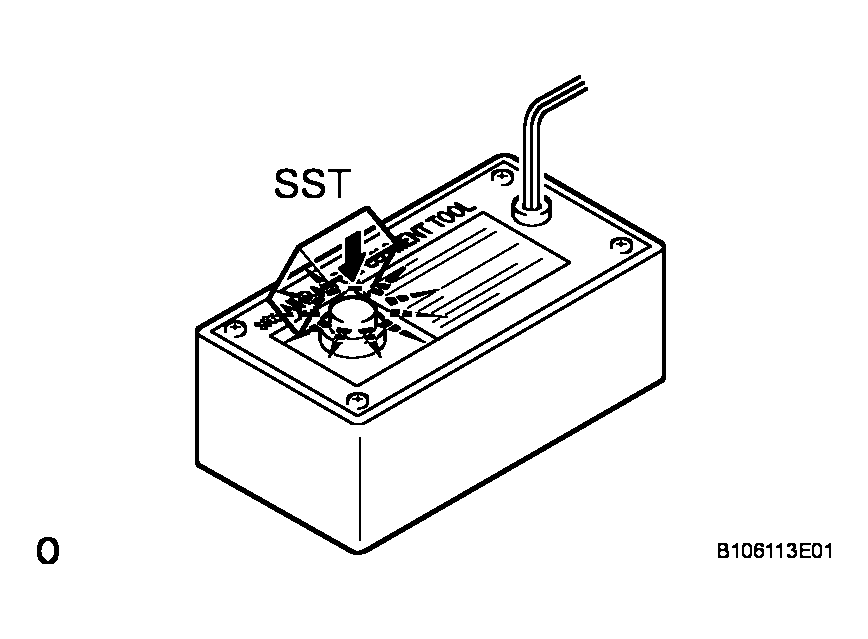

Front Seat Outer Belt Assembly With PRETENSIONER: Disposal
HINT:
When scrapping vehicles equipped with a seat belt pretensioner or disposing of a front seat outer belt (with seat belt pretensioner), always first activate the seat belt pretensioner in accordance with the procedures described below. If any abnormality occurs during activation of the seat belt pretensioner, contact the SERVICE DEPARTMENT of TOYOTA MOTOR SALES, U.S.A., INC.
- Never dispose of a front seat outer belt that has a nonactivated pretensioner.
- The seat belt pretensioner produces a loud, exploding sound when it activates. Perform the operation where it will not be a nuisance to nearby people.
- When activating a front seat outer belt (with seat belt pretensioner), stand at least 10 m (33 ft.) away from the front seat outer belt.
- Use gloves and safety glasses when handling a front seat outer belt with an activated pretensioner.
- Always wash your hands with water after completing the disposal.
- Do not apply water to a front seat outer belt that has an activated pretensioner.
- Perform procedures in a place away from electrical interference.
- When activating the seat belt pretensioner, always use the specified SST (SRS airbag deployment tool).
- DISPOSE OF FRONT SEAT OUTER BELT ASSEMBLY (WHEN INSTALLED IN VEHICLE)
HINT:
Prepare a battery to activate the seat belt pretensioner.
- Check if SST is functioning properly.
SST 09082-00700
NOTE: When activating the seat belt pretensioner, always use the specified SST.- Connect the SST's red clip to the battery's positive (+) terminal and the black clip to the battery's negative (-) terminal.
HINT:
Do not connect the yellow connector. The yellow connector is used to connect to the seat belt pretensioner.
- Press the SST activation switch and check that the LED of the SST activation switch illuminates.NOTE: If the LED illuminates when the activation switch is not being pressed, SST may be malfunctioning. Replace SST with a new one.
- Connect the SST's red clip to the battery's positive (+) terminal and the black clip to the battery's negative (-) terminal.
- Disconnect SST from the battery.
- Disconnect the pretensioner connector.

Courtesy of © TOYOTA, LICENSE AGREEMENT TMS1002- Disconnect the cable from the negative (-) battery terminal.
- Check the SRS airbag system (see AIRBAG SYSTEM ).
- Remove the front door scuff plate (see REMOVAL ).
- Remove the rear door scuff plate (see REMOVAL ).
- Remove the front door opening trim (see REMOVAL ).
- Remove the rear door opening trim (see REMOVAL ).
- Remove the center pillar garnish lower (see REMOVAL ).
- Disconnect the pretensioner connector as shown in the illustration.
- Prepare SST for activation of the seat belt pretensioner.
- Install the floor anchor of the seat belt.
- Connect SST (A) to SST (B). Then connect SST (B)'s connector to the seat belt pretensioner.
SST 09082-00700, 09082-00770
NOTE: To avoid damaging SST connector and wire harness, do not lock the secondary lock of the twin lock. - Move SST at least 10 m (33 ft.) away from the front of the vehicle.
- Close all the doors and windows of the vehicle.
HINT:
Leave a gap in one of the windows for inserting SST wire harness.
NOTE: Take care not to damage SST wire harness. - Connect the SST's red clip to the battery's positive (+) terminal and the black clip to the negative (-) terminal.
- Activate the seat belt pretensioner.
- Confirm that no one is inside the vehicle or within 10 m (33 ft.) of the vehicle.
- Press the SST activation switch to activate the seat belt pretensioner.
HINT:
The seat belt pretensioner operates at the same time the SST activation switch's LED illuminates.
- Dispose of the front seat outer belt (with the seat belt pretensioner).CAUTION:
- Do not touch the front seat outer belt for at least 30 minutes after the seat belt pretensioner has been activated. It is very hot.
- Use gloves and safety glasses when handling a front seat outer belt whose pretensioner has been activated.
- Always wash your hands with water after completing the disposal.
- Do not apply water to a front seat outer belt that has an activated pretensioner.
HINT:
When scrapping a vehicle, activate the seat belt pretensioner, and then scrap the vehicle with the activated front seat outer belt installed.
- Check if SST is functioning properly.
- DISPOSE OF FRONT SEAT OUTER BELT ASSEMBLY (WHEN NOT INSTALLED IN VEHICLE) NOTE:
- When only disposing of the front seat outer belt (with the seat belt pretensioner), never use the customer's vehicle to activate the seat belt pretensioner.
- Be sure to follow the procedures listed below when activating the seat belt pretensioner.
- Remove the front seat outer belt.
- Wind the seat belt with the retractor.
- When the seat belt is sufficiently wound, cut the seat belt approximately 100 mm (0.39 in.) from the retractor, as shown in the illustration.
HINT:
The seat belt is designed so that winding the seat belt before pretensioner activation will decrease the pulling power of the seat belt during pretensioner activation.
- Check if SST is functioning properly.
SST 09082-00700, 09082-00770
CAUTION: When activating a seat belt pretensioner, always use the specified SST. - Prepare SST for activation of the seat belt pretensioner.
- Connect SST (A) to SST (B). Then connect SST (B)'s connector to the seat belt pretensioner.
SST 09082-00700, 09082-00770
NOTE: To avoid damaging the SST connector and wire harness, do not lock the secondary lock of the twin lock. - Place the front seat outer belt on the ground and cover it with a tire (with wheel).NOTE: Set up the front seat outer belt as shown in the illustration.
- Move SST at least 10 m (33 ft.) away from the wheel.NOTE: Take care not to damage the SST wire harness.
- Connect SST (A) to SST (B). Then connect SST (B)'s connector to the seat belt pretensioner.
- Activate the seat belt pretensioner.
- Connect the SST's red clip to the battery's positive (+) terminal and the black clip to the battery's negative (-) terminal.
- Check that no one is within 10 m (33 ft.) of the wheel.
- Press the SST activation switch to activate the seat belt pretensioner.
HINT:
The seat belt pretensioner operates at the same time the SST activation switch's LED illuminates.
- Dispose of the front seat outer belt (with the seat belt pretensioner).CAUTION:
- Do not touch the front seat outer belt for at least 30 minutes after the seat belt pretensioner has been activated. It is very hot.
- Use gloves and safety glasses when handling a front seat outer belt whose pretensioner has been activated.
- Always wash your hands with water after completing the disposal.
- Do not apply water to a front seat outer belt that has an activated pretensioner.
- Remove the tire (with wheel) and SST.
- Place the front seat outer belt in a plastic bag, tie the end tightly, and dispose of it in the same way as other general parts.